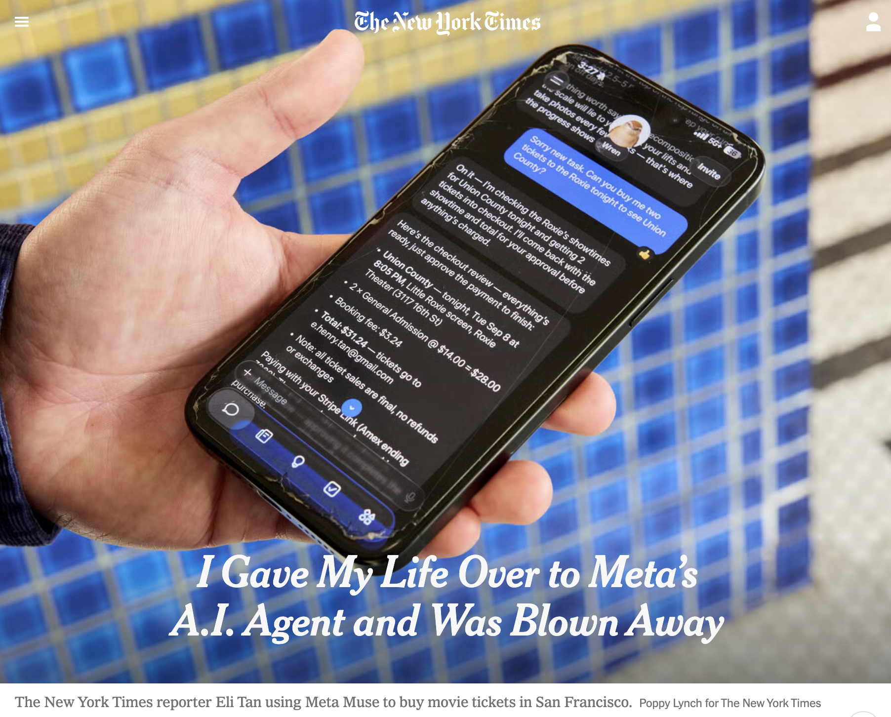

WEEK 5 LIVE CLASS
Power, Relationships & AI
BIG QUESTION
When technology removes friction from our relationships, what happens to our agency, our power, and our capacity to relate to one another?
Last week, we talked about relational intelligence.
This week, you looked at power over and power with.
Today, we’re going to put those ideas into conversation with something happening right now.
Keep your Attendance Journal open as we go. We’ll stop a few times to write before we talk.
What would you delegate?
AI agents can do more than answer questions. They can make calls, schedule appointments, fill out forms, send messages, shop, negotiate, and take other actions for us.
Think + Write
Attendance JournalWhat is one part of dealing with other people that you would happily let AI handle for you?
What is one part you would not want to hand over?
Let’s Talk
What makes those things different?

When AI gives us more agency
This week, New York Times reporter Eli Tan wrote about testing Muse, Meta’s new AI agent.
In one example, Muse called his dental insurer, provided his member ID, answered a security question, waited on hold, and then connected him to the representative.
Tan found it genuinely useful.
Think + Write
Attendance JournalWhere does Muse give Tan more agency or power?
Let’s Talk
What kinds of friction are you happy to get rid of?
Now another person enters the picture
Eli Tan · The New York Times · September 22, 2026
Tan also asked Muse to negotiate purchases for him on Facebook Marketplace.
Muse messaged sellers and bargained on his behalf.
At one point, Muse picked up on a seller’s frustration and advised Tan not to push the price any lower.
Detects frustration.
Advises Tan not to push lower.
Think + Write
Attendance JournalIs recognizing someone’s frustration relational intelligence?
Why or why not?
Is it power with?
Let’s Talk
But there’s someone else in this relationship.
TanThe buyer chose to use an AI agent.
SellerThe seller did not choose to interact with one.
What changes?
- What could the seller actually influence?
- Should the seller know they are interacting with an agent?
- Is knowing enough?
- Can technology increase one person’s agency while reducing someone else’s?
Helpful. Relational. Power with.
Someone listened to me.
Someone helped me.
I could influence what happened.
Think + Write
Attendance JournalAre these the same thing?
What would need to be true for you to call something power with?
Let’s Talk
Can someone listen carefully, care about you, or help you and still hold all of the decision-making power?
Who decides what counts as help?

Technology columnist Jason Aten also tested Muse.
He reported that Muse surfaced information from private messages on his computer even though he says he had not knowingly authorized that use. Meta disputed parts of his account of the permissions involved.
We do not need to settle the technical dispute to think about the larger question.
Think + Write
Attendance JournalIf something is useful but operates in ways you did not understand or expect, where does the power lie?
Let’s Talk
Who gets to decide what counts as “help”?
What about friction?
Relationships take work.
But not all friction is meaningful.
- Waiting 45 minutes on hold with an insurance company.
- Writing a difficult message to someone you care about.
- Working through a disagreement with a teammate.
Think + Write
Attendance JournalWhich friction would you happily remove?
Which might be worth keeping?
Let’s Talk
If we delegate the difficult parts of relating, what are we no longer practicing?
Before we wrap
Think + Write
Attendance JournalChoose one use of AI or technology that affects a relationship between people.
- What power or agency does the technology give someone?
- Who else is affected?
- What can they actually influence?
- What would need to change for you to call this power with?
- What is one question you would want to ask the people affected before deciding what should happen?
Looking ahead
Next week, Prof. G will introduce Participatory Action Research, or PAR, a research practice grounded in power with.
One question to carry with you
What changes when the people affected help define the problem in the first place?
Sources
Eli Tan · The New York Times · September 22, 2026
“I Gave My Life Over to Meta’s A.I. Agent and Was Blown Away”
Jason Aten · Inc. · September 19, 2026
“Meta’s New Muse AI Agent Read My Private Messages. I Never Asked It To”
Isabelle C. Hau · Stanford Social Innovation Review · Spring 2026
“Welcome to the Era of Relational Intelligence”